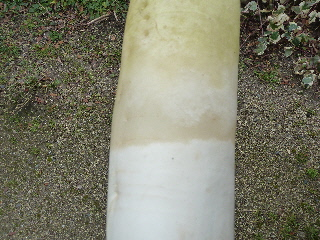
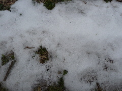
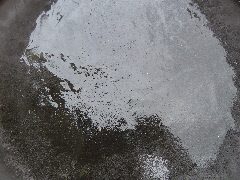
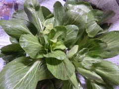
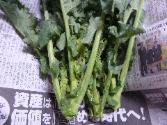
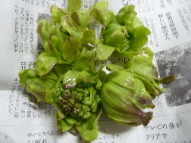
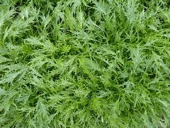

遊びで植物を育てよう
2016/01/31
大根が凍ってた。
寒さで、大根がこおっていました。

地面の中は大丈夫ですが、地上に出ている部分が凍っています。
冬は寒くて当たり前なんだから、こんなこともありますよ。
【1月TOP】 【日記TOP】 【園芸TOP】
2016/01/24
寒波が来ました。
何年に1度の寒波だそうです。

今のところ雪は降っていないですが、以前に降った雪が解けずに残っています。

水はしっかり凍ってます。
氷が厚いです。
日中の氷点下ってここらへんではあまりないので、なんか新鮮でした。
【1月TOP】 【日記TOP】 【園芸TOP】
2016/01/17
チンゲンサイが大きくなりました。
寒いので野菜洗いは辛いな。

チンゲンサイって葉っぱと葉っぱの間に土が入って面倒です。
【1月TOP】 【日記TOP】 【園芸TOP】
2016/01/17
アスッコを収穫しました。
まだ小さいので収穫するかどうか迷ったんですが、収獲しました。

若いので柔らかいかと思ったんですが、寒い時期にちょっとづつ育ったものなので、ちょっと堅かったです。
【1月TOP】 【日記TOP】 【園芸TOP】
2016/01/17
フキノトウの花が咲きそうです。
まだ1月なんですが、フキノトウが大きく育ってました。

暖冬のせいかな。
大きいのは好きじゃないので、小さいうちに収穫するようにしたいな。
【1月TOP】 【日記TOP】 【園芸TOP】
2016/01/17
水菜が綺麗に育っています。
いい写真が取れました。

写真の使い道はないですけどね。
綺麗な葉っぱは美味しそうです。
【1月TOP】 【日記TOP】 【園芸TOP】
過去の日記
【2015年1月の日記】
【2014年1月の日記】
【2013年1月の日記】
【1月TOP】
【日記TOP】
【園芸TOP】
畑仕事じゃないよ。
【おいしいものを食べよう。】【しっかり寝よう。】
【ソロ活をしよう!】【季節感のあることをしよう。】【動画視聴はほどほどに。】【当サイトの全てのコンテンツは無断転載禁止です。】